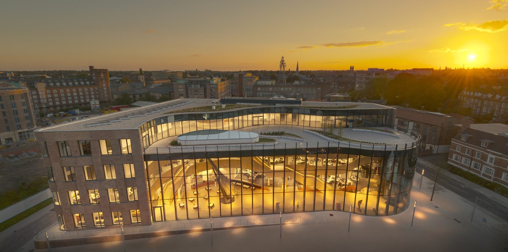

Guided tours of the art collection · York
Hiscox
York
Arts Tours
An extraordinary private art collection — Hockney, Moore, Hodgkin and many more — inside one of York's most remarkable buildings. Volunteer-led. Every tour supports a York charity.

The Hiscox Building · Peasholme Green · York YO1 7PR
About the tours
A art gallery hiding inside an insurance company
When Hiscox built their York office on Peasholme Green, they commissioned Make Architects—the practice behind London's Gherkin—to transform a forgotten corner of York's medieval heart. The resulting building is a landmark in its own right, featuring a striking curved glass atrium that glows amber at dusk.
Inside, the building houses a portion of the Hiscox Collection. Started in 1971 when founder Robert Hiscox purchased an etching for his office in Lloyd's of London, the collection has since grown to over 1,000 pieces.
Visitors can encounter works by some of the most influential artists of the 20th and 21st centuries, most of which are typically held by major national galleries.
Our volunteer-led tours have been running since 2018, opening up this remarkable collection to the people of York — and raising money for a different York charity each year.
"Art is an integral part of the culture of Hiscox. We insure it, we own it and we encourage it… Our collection hangs in our offices and we live with it." — Robert Hiscox, founder
The collection
Over 25 artists — most of them in national collections too
These are six of the works you'll encounter on a tour. The full collection is waiting to be discovered in person.
Born Bradford, 1937
David Hockney
The Arrival of Spring in Woldgate, East Yorkshire
A 52-part work made on an iPad in his seventies — one of Hockney's most significant series. Each print depicts a single day of the changing seasons near Bridlington. When the Royal College of Art refused to let him graduate in 1962, Hockney drew a protest piece. They later changed their regulations and awarded him the diploma.
Born Castleford, 1898
Henry Moore
Sheep Sketchbook, 1972
In February 1972 Moore retreated from exhibition preparations and began drawing the sheep outside his window. What started as a distraction became one of his finest late works — full of the mother-and-child associations that run through all his sculpture. Hiscox acquired this in 1982, four years before Moore died aged 88.
Born London, 1932
Howard Hodgkin
Into the Woods, Summer, 2002
Turner Prize winner, 1985. One of the great British colourists of the postwar era, Hodgkin was known for abstract works rooted in memory — encounters, places, relationships. This lift-ground etching captures that expressiveness in print form. He was knighted in 1992.
Born York, 1964
Harland Miller
York So Good They Named It Once
A York-born artist best known for his sardonic Penguin paperback canvases. This print plays on the city's single, confident name. A comparable Miller canvas sold at Sotheby's in 2016 for £75,000. When the Hiscox building opened, a guest claimed the displayed piece was merely a copy of their own original — a claim that rather added to the story.
Born London, 1967
Gavin Turk
Faces — seven screenprints with diamond dust
One of the original Young British Artists and one of the great provocateurs of contemporary British art. His Faces series recasts his own face as Elvis, Joseph Beuys and Che Guevara — a sustained meditation on celebrity, imitation and what it means to be an artist. In 1991, the Royal College refused to award him his degree. The White Cube signed him shortly afterwards.
Born Dresden, 1932
Gerhard Richter
Prints with HENI Productions, 2014
One of the defining painters of the 20th century. Richter's career began under political censure in East Germany; his photo-based paintings and later abstracts redefined what painting could be. A Richter canvas sold at Sotheby's in February 2015 for £30 million. The Hiscox prints were produced in collaboration with HENI Productions as high-quality facsimile editions.
This year's cause
Supporting Guide Dogs UK in 2026
Every tour takes a suggested donation at the door, and the Hiscox Foundation match-funds what we collect. Since 2018, successive tours have raised over £35,000 for York charities across the full range — from local hospices to community arts.
This year's charity partner is Guide Dogs UK, who provide life-changing services to people living with sight loss across the UK.
Book a tour for 2026The Hiscox Building
Peasholme Green, York YO1 7PR — a ten-minute walk from York Minster, in the St Saviour's quarter of the medieval city.
Evening tours, ~90 minutes
Tours run in the evening and cover all five floors of the building. Booking is via TicketSource; places are limited. Check Facebook for upcoming dates.
Volunteer-led since 2018
Guided by John Jobling, who has led every tour since the building opened. Expect art history, Yorkshire connections, and a lively ninety minutes.
Dates & booking
Come and see it for yourself
New tour dates are announced throughout the year on Facebook and TicketSource. Places fill up quickly — it's worth booking as soon as you see a date that suits.